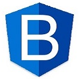

Bootstrap is a free and open-source CSS framework directed at responsive,
mobile-first front-end web development. It contains CSS- and (optionally)
JavaScript-based design templates for typography, forms, buttons,
navigation, and other interface components. Bootstrap is the
seventh-most-starred project on GitHub, with more than 142,000 stars,
behind freeCodeCamp (almost 312,000 stars) and marginally behind Vue.js
framework. According to Alexa Rank, Bootstrap is in the top-2000 in the
USA while vuejs.org is in the top-7000 in the USA.ootstrap, originally
named Twitter Blueprint, was developed by Mark Otto and Jacob Thornton at
Twitter as a framework to encourage consistency across internal tools.
Before Bootstrap, various libraries were used for interface development,
which led to inconsistencies and a high maintenance burden.
For more information, click here.